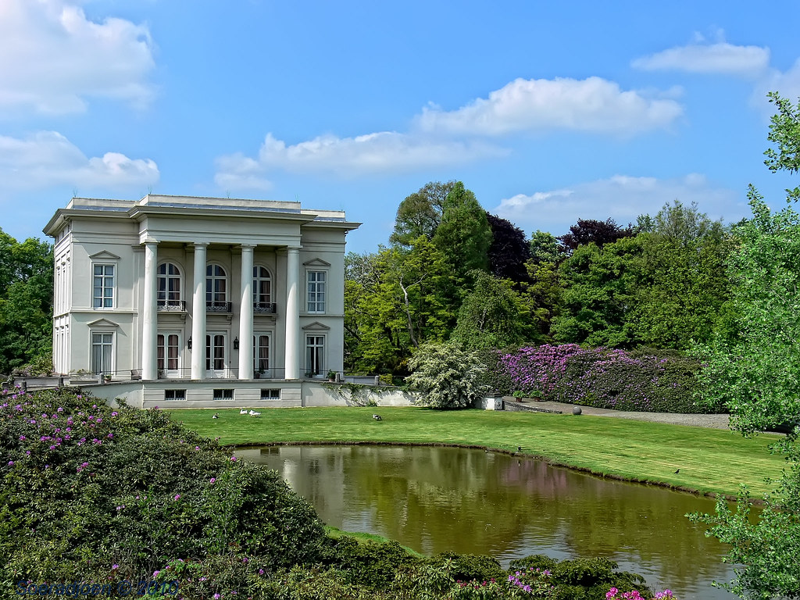

Het Hof van Ringen of kasteel Ringenhof is een kasteel gelegen op het grondgebied van de stad Lier, in de Belgische provincie Antwerpen. Het is gelegen aan de Mechelsesteenweg. In 1849 werd het kasteel in Neoklassieke stijl met kenmerken van het palladianisme gebouwd aan de oevers van de Nete. De gevel met zijn vier kolommen die de drie centrale ramen kadreren is geïnspireerd op het paviljoen de Klein Trianon van het kasteel van Versailles. Karakteristiek is de ingangspartij met hoge Dorische zuilen. Het kasteel heeft een plat dak. De grond waarop het latere kasteel werd gebouwd, was reeds begin 18e eeuw eigendom van de brouwersfamilie Bogaerts, die er in 1827 het “lusthof van Ringen” lieten bouwen.
Dochter Maria Carolina trouwde met Auguste Berckmans, en in 1849 volgde het huidige kasteel. De familie Berckmans bezat ook het oude kasteel Isschot in Itegem. In 1910 werd het kasteel gekocht door Ernest Lowet. In 1996 werd het kasteel gerestaureerd en in 1997 werd het park heringericht. Het kasteel bevindt zich in een domein van 24 ha, met vijvers. Er is een oranjerie op kwartcirkelvormige plattegrond. Ook bevindt zich op het terrein een conciërgewoning die eveneens neoclassicistische stijlkenmerken vertoont.
Huidige eigenaar en bewoner van Hof van Ringen is de Belgische modeontwerper Dries Van Noten. In de context van Antwerpen, de stelling van antwerpen was een militaire verdedigingsgordel rond antwerpen bestaande uit twee ringen van forten. de fortengordel, die de stad moest beschermen tegen bombardementen en vrijwaren van bezetting, werd gebouwd tussen 1859 en 1914. deze verdedigingsstructuur bestaande uit gegroepeerde forten noemde men pfa. deze pfa had als bijzondere bedoeling te dienen als reduit of nationale terugvalbasis bij vijandelijkheden om alzo via de westerschelde terug te vallen op de kustversterking. In de context van Antwerpen, dit is een lijst van schouten, schepenen en andere hoge ambtsdragers van de stad maastricht van 1245 tot 1795. tot de komst van de fransen in 1794 had het tweeherige maastricht een luiks en een brabants hooggerecht, elk met zijn eigen schout en schepenen.
De provincie Antwerpen biedt naast het bezoek aan Hof van ringen nog vele andere interessante activiteiten en bezienswaardigheden die uw bezoek compleet maken.
Bezoek het voormalige huis en atelier van Peter Paul Rubens
Bewonder de gotische architectuur en Rubens' meesterwerken
Wandel door een van de mooiste parken van Antwerpen
Ontdek de geschiedenis van Antwerpen in dit historische kasteel
Adres: Unnamed Road, 2500 Lier, België